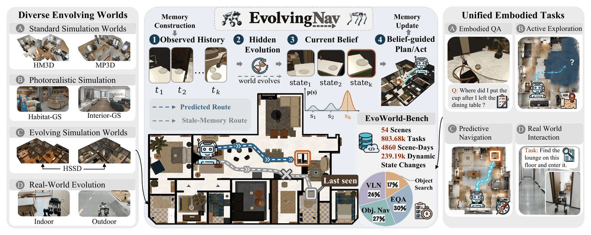
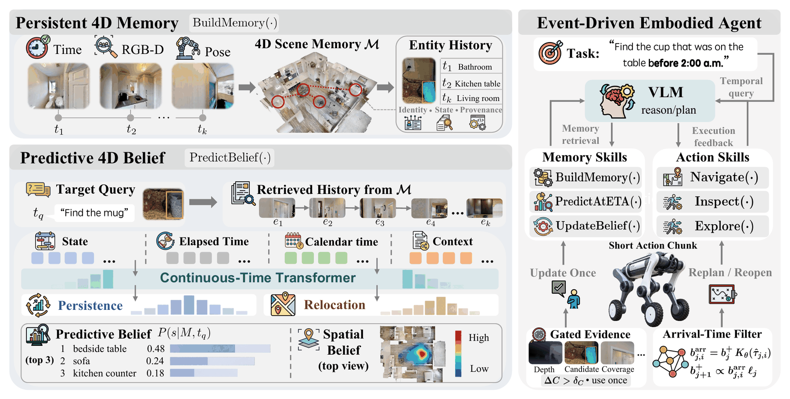
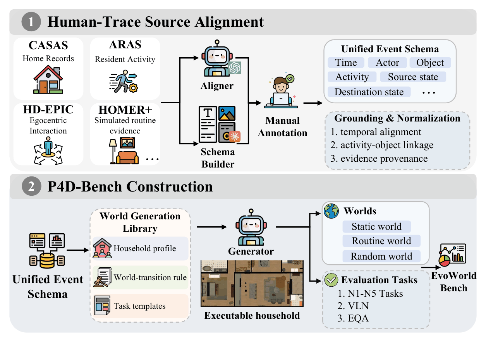
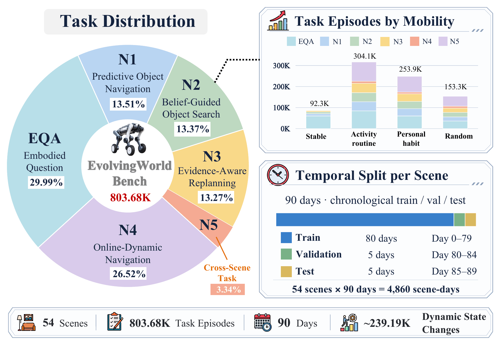
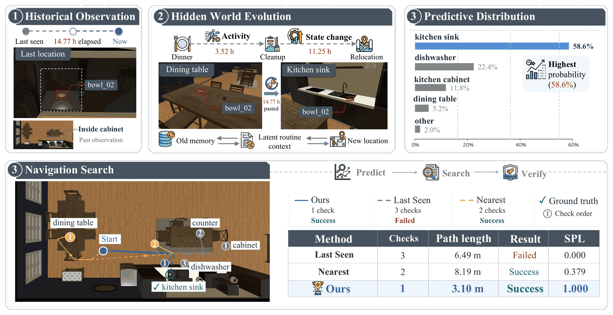
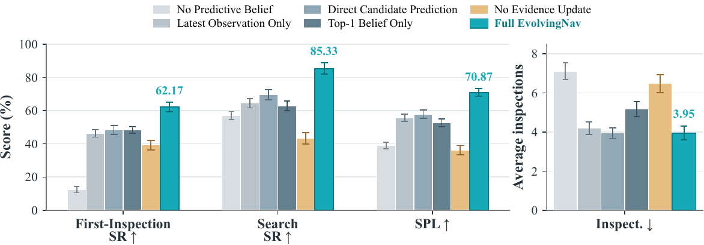
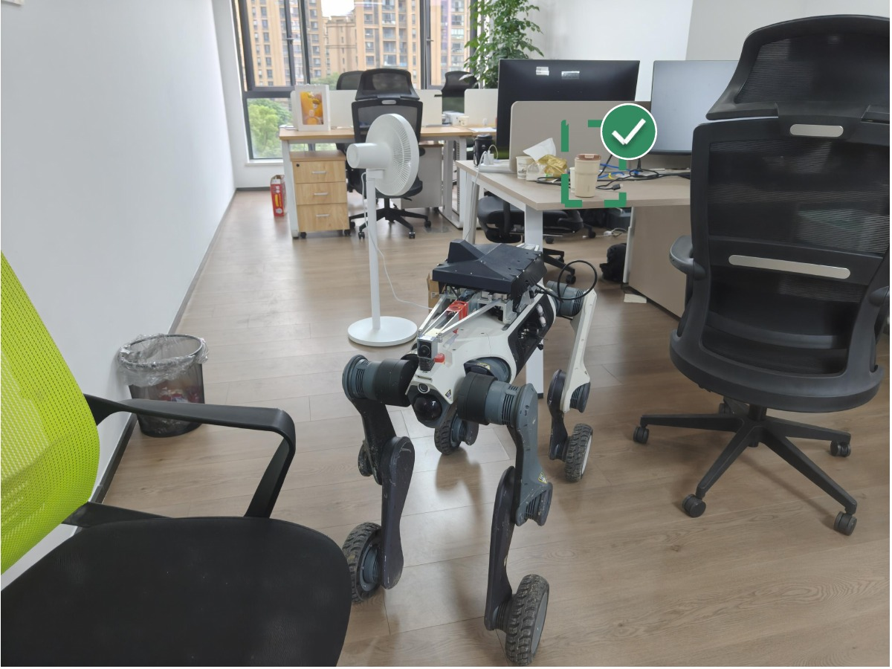
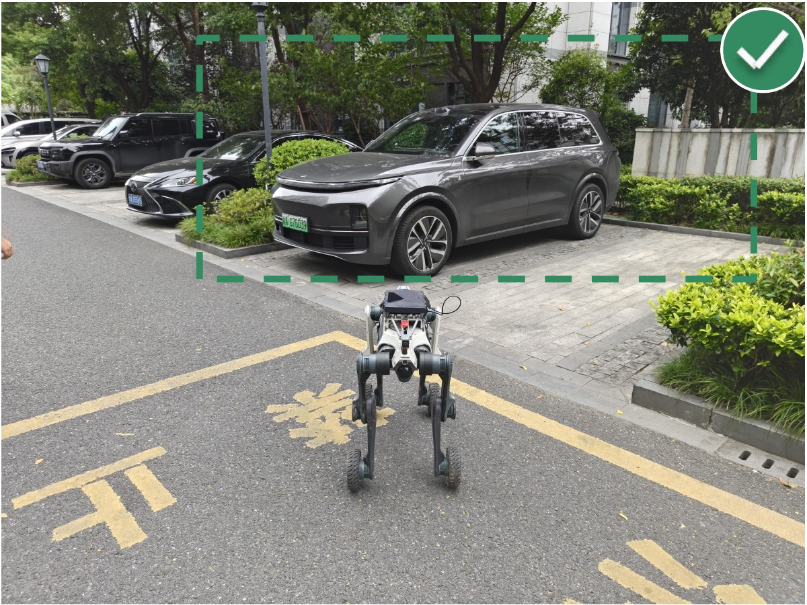

Beyond the Remembered World: Predictive 4D Belief for
Persistent Navigation in Evolving Worlds
HSSD SCENES
Four illustrative navigation episodesHM3D SCENES
Four long-horizon navigation episodesHABITAT-GS SCENES
Four evidence-aware navigation episodes
Abstract
Persistent embodied agents must act from memories that can become stale: objects move while the agent is away, continue evolving during navigation, and may remain hidden even after an inspection. Existing methods do not jointly account for this continued hidden-world evolution and visibility-conditioned belief revision.
We introduce EvolvingNav, which turns timestamped 3D histories into a persistence–relocation belief over the current world. Its event-driven filter forecasts object state at candidate arrival times, invokes a frozen zero-shot vision-language model only when new RGB-D evidence is informative, and replans when evidence invalidates a candidate. We also introduce EvoWorld-Bench, a 54-scene benchmark with 803.68K tasks. EvolvingNav improves first-inspection decisions, budgeted search, and recovery, with the largest gains when environmental change has learnable regularity.
Method
EvolvingNav represents each remembered entity with a timestamped 3D history and a factorized belief: a persistence term estimates whether the last observed state remains valid, while a relocation term distributes probability over plausible destinations. Instead of predicting only at query time, the planner forecasts the belief at each candidate’s estimated arrival time.

Execution proceeds in short action chunks. After each informative observation, the posterior is revised, invalidated candidates are suppressed, and previously rejected candidates may be reopened when time or evidence makes them plausible again.
timestamped history → arrival-time belief → short-horizon action → visibility-qualified evidence → replan
Interactive 4D World Memory Explorer
Explore a real HSSD scene from above. Follow the quadruped’s inspection route and see how new evidence changes an illustrative belief over object locations.
Find the mug
Where is it now?
Follow the belief. Gather new evidence.
- 01 Predict
- 02 Inspect
- 03 Update
- 04 Recover
Object memory
Scene images are captured in Habitat-Sim from HSSD. Object markers, probabilities and inspection outcomes illustrate the method; they are not measured model outputs. Scene provenance ↗
EvoWorld-Bench
EvoWorld-Bench evaluates navigation when the world changes between observations and may continue changing while the agent acts. The latest release contains 54 scenes and 803.68K executable tasks, with persistent temporal histories, causal observability, controlled dynamics, and held-out transfer settings.


Results
EvolvingNav improves both the first destination selected from stale memory and the ability to recover within a search budget. It transfers across FindingDory, GOAT-Bench, EvoWorld-Bench, and physical LYNX M20 trials.
| Method | FindingDory HL-SR ↑ | GOAT-Bench SR ↑ | EvoWorld First-Inspection ↑ | EvoWorld Search SR ↑ | EvoWorld SPL ↑ |
|---|---|---|---|---|---|
| DynaMem | 30.30 | 14.54 | 45.33 | 71.94 | 56.83 |
| EvolvingNav (ours) | 53.22 ± 3.87 | 35.43 ± 2.16 | 61.32 ± 3.24 | 86.18 ± 2.07 | 70.15 ± 1.74 |


Real-world evaluation
Across 64 matched LYNX M20 search episodes, EvolvingNav reaches 34.4% First-Inspection SR, 48.4% Search SR, and 24.3% Recovery SR, with 43.8 m mean travel.


Resources
BibTeX
@inproceedings{evolvingnav2027,
title = {Beyond the Remembered World: Predictive 4D Belief for Persistent Navigation in Evolving Worlds},
author = {EvolvingNav authors},
booktitle = {International Conference on Learning Representations},
year = {2027}
}